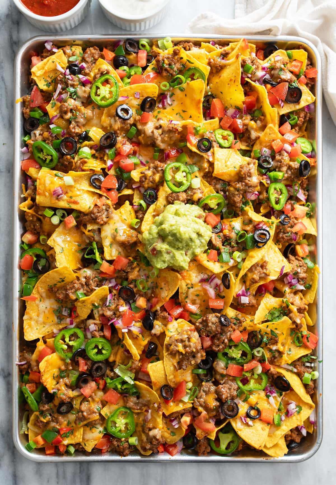

Nachos

Classic Mexican style chorizo nachos
Ingredients
- Tortilla chips
- Chorizo
- Mozzarella Cheese
- beans
- Tomato
- onion
- avocado
- sour cream
- limes
- salt
- pickled jalapenos
Instructions
- Preheat the oven to 400 degrees. Grab a large baking sheet and set it aside. Shred the cheese and set it aside. Drain and rinse 1 can of beans and set that aside.
- Cook the chorizo, breaking it apart into small pieces as you go, in a medium skillet for 7-10 minutes (or until fully cooked through), flipping and turning it often.
- Add the tortilla chips directly to the baking sheet. Layer the nachos with a little cheese, a little chorizo, a little black beans and repeat until all of the ingredients are used up.
- Cube the tomato, and onions, then set aside. cut the avocado in half, then in a medium bowl smash till smooth. add the tomato and onion, then add lime and salt to taste.
- Bake for 5-10 minutes or until the cheese is melted and golden brown.
- add the guacamole, sour cream, and pickled jalapenos to taste, then enjoy.
Home